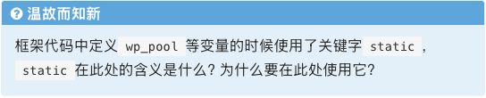

ICS_PA1 实验报告
实验进度
我已完成 PA1 的所有内容，并通过了所有的测试样例。
必答题
程序是个状态机
问题： 画出计算 1+2+…+100 的程序的状态机。
Solution:
// PC: instruction | // label: statement
0: mov r1, 0 | pc0: r1 = 0;
1: mov r2, 0 | pc1: r2 = 0;
2: addi r2, r2 , 1 | pc2: r2 = r2 + 1;
3: add r1, r1 , r2 | pc3: r1 = r1 + r2;
4: cmp r2 100 | pc4: compare r2 with 100;
5: jl 2 | pc5: if r2 < 100, jump to pc2
程序的状态机如下：
//(PC,r1,r2)
(0,x,x)→(1,0,x)→
(2,0,0)→(3,0,1)→(4,1,1)→(5,1,1)→
(2,1,1)→(3,1,2)→(4,3,2)→(5,3,2)→
...
(2,4851,98)→(3,4851,99)→(4,4950,99)→(5,4950,99)→
(2,4950,99)→(3,4950,100)→(4,5050,100)→end
理解基础设施
问题： 通过计算来体会简易调试器的作用。
假设条件：
- 需要编译 500 次 NEMU 才能完成 PA。
- 500 次编译中，有 90% 的次数用于调试。
- 没有实现简易调试器时，只能通过 GDB 调试，每次获取并分析一个信息需要 30 秒。
- 需要获取并分析 20 个信息才能排除一个 bug。
- 通过简易调试器只需要花费 10 秒的时间获取并分析相同的信息。
解答： （1）没有简易调试器的情况：
- 用于调试的编译次数：500×90 次
- 每次调试总时间：20 个信息×30 秒/信息=600 秒
- 总调试时间：450 次×600 秒/次=270,000 秒
- 总调试时间（小时）：270,000÷3600=75 小时 如果没有简易调试器，将在调试上花费 75 小时。
（2）使用简易调试器的情况：
- 每次调试总时间：20 个信息×10 秒/信息=200 秒
- 总调试时间：450 次×200 秒/次=90,000 秒
- 总调试时间（小时）：90,000÷3600=25 小时
- 节省的时间：75−25=50 小时 使用简易调试器可以节省 50 小时 的调试时间。
总结： 实现简易调试器在本学期中可节省约 50 小时 的调试时间。
RTFM：理解科学查阅手册的方法
问题： 在 RISC-V ISA 手册中查阅以下问题所在的位置，并将需要阅读的范围写到实验报告中。 （1）riscv32 有哪几种指令格式？
- 手册位置： 《The RISC-V Instruction Set Manual Volume I》第 15 页，2.2 Base Instruction Formats。

- 解答： RISC-V 有四种基本的指令格式：
- R-Type
- I-Type
- S-Type
- U-Type
（2）LUI 指令的行为是什么？
- 手册位置： 《The RISC-V Instruction Set Manual Volume I》第 19 页，2.4 Integer Computational Instructions。

- 解答： LUI (Load Upper Immediate) 指令将一个 20 位的立即数加载到目标寄存器的高 20 位，同时将低 12 位清零。
（3）mstatus 寄存器的结构是怎么样的？
- 手册位置： 《The RISC-V Instruction Set Manual Volume II》第 20 页，3.1.6 Machine Status Registers (
mstatusandmstatush)。
- 解答：
mstatus寄存器是机器模式下的状态寄存器，包含中断使能位、特权模式信息等关键控制位。
Shell 命令统计代码行数
问题分析
我们需要统计 NEMU 项目中 PA1 完成后的代码行数，并与 PA0 基准进行比较，计算新增代码量。
统计方法与结果
（1）PA1 完成后代码总行数（含空行）
# 执行命令
find -name "*.c" -o -name "*.h" | xargs wc -l
结果：267,533 行 （2）PA1 期间新增代码行数
# 切换到 PA0 分支获取基准数据
git checkout pa0
find -name "*.c" -o -name "*.h" | xargs wc -l
- PA0 基准： 266,809 行
- PA1 完成： 267,533 行
- 新增代码量： 267,533−266,809=724 行
（3）排除空行的有效代码统计
# 排除空行统计命令
find -name "*.c" -o -name "*.h" | xargs grep -v '^$' | wc -l
- PA0 有效代码： 230,501 行
- PA1 有效代码： 231,191 行
- 新增有效代码： 231,191−230,501=690 行
（4）Makefile 自动化配置 在 nemu/scripts/build.mk 文件中添加以下内容实现自动化统计：
count:
@find -name "*.c" -o -name "*.h" | xargs wc -l
count-no-blank:
@find -name "*.c" -o -name "*.h" | xargs grep -v '^$' | wc -l
使用方式：
make count # 统计总行数（含空行）
make count-no-blank # 统计有效代码行数
总结表格
| 统计类型 | PA0 基准 | PA1 完成 | 新增量 |
|---|---|---|---|
| 总行数（含空行） | 266,809 | 267,533 | +724 |
| 有效代码行数 | 230,501 | 231,191 | +690 |
编译选项解释
问题： 解释 nemu/scripts/build.mk 文件中的 -Wall 和 -Werror 编译选项。
CFLAGS := -O2 -MMD -Wall -Werror $(INCLUDES) $(CFLAGS)
RTFM: Warning Options (Using the GNU Compiler Collection (GCC))
（1）-Wall 选项
-Wall # Warning all(not really)
- 作用： 开启 GCC 编译器的所有标准警告信息，帮助开发者发现代码中的潜在问题。
- 包含的警告： 未使用的变量、可疑的类型转换、可能的空指针解引用等常见问题。
- 优点： 在编译阶段提前发现许多常见的编程错误，提高代码质量。
（2）-Werror 选项
-Werror # Turn all warnings into errors.
- 作用： 将编译过程中产生的所有警告都作为错误处理，导致编译失败。
- 效果： 强制开发者必须解决所有警告，不能忽略任何潜在问题。
- 优点： 确保代码库中不存在任何编译警告，提高代码的严谨性和可维护性。
为什么需要使用 -Wall 和 -Werror？ 通过强制处理所有警告，确保了代码的高质量。这有助于避免潜在的逻辑错误和运行时问题，从而降低未来的维护成本。
遇到的问题 & 看法以及趣事😊
神秘的➗0:
在写表达式测试程序 gen-expr.c 有这么一道思考题：
 STFM有：
STFM有：
-
The ISO International Standard of the C Programming Language, draft N1570 “6.5.5 Multiplicative operators”:
5 The result of the / operator is the quotient from the division of the first operand by the second; the result of the % operator is the remainder. In both operations, if the value of the second operand is zero, the behavior is undefined.
-
N1570 3. Terms, definitions, and symbols:
3.4.3.
1 undefined behavior
behavior, upon use of a nonportable or erroneous program construct or of erroneous data, for which this International Standard imposes no requirements2 NOTE Possible undefined behavior ranges from ignoring the situation completely with unpredictable results, to behaving during translation or program execution in a documented manner characteristic of the environment (with or without the issuance of a diagnostic message), to terminating a translation or execution (with the issuance of a diagnostic message).
在C语言标准中，除零操作（如 \0 整型除法）被明确定义为未定义行为。当程序执行此类未定义行为时，其结果将是不可预测的，且编译器不提供任何保证。在编译阶段，编译器通常会发出警告：
warning: division by zero is undefined [-Wdivision-by-zero]
运行编译后的程序通常会触发以下错误：
Floating point exception (core dumped)
基于这一错误特征，我首先想到可以利用程序框架提供的 pclose() 函数来检测除零异常。具体实现如下：
fp = popen("/tmp/.expr", "r");
assert(fp != NULL);
int pclose_ret = pclose(fp);
if (pclose_ret != 0) {
i--;
continue; // 若运行失败，跳过当前迭代
}
pclose() 函数在关闭管道的同时，会返回所执行命令的退出状态：
- 当程序正常运行时，
pclose()返回值为 0 - 当出现除零等异常行为时，
pclose()返回值将不为 0
通过检查 pclose_ret 的值是否为 0，即可有效判断目标程序中是否发生了除零异常。理论上，这个问题应该到此解决了。然而在测试中出现了意想不到的麻烦：
- 在将
gen-expr.c生成的表达式作为输入测试 NEMU 表达式运算时，触发了expr()中的除零检测，导致测试中断。检查发现生成的表达式确实包含了除零操作。但令人困惑的是，同样的表达式在 C 程序中进行计算时却能得出结果，并没有触发上文提及的除零报错。STFW发现，除零行为在某些情况下,编译器会对常量表达式进行优化，直接忽略掉除0的部分
这说明通过pclose()的返回值我们并不能百分百排除生成除0的表达式。重新研究编译器对除0行为反馈的信息：出现除0行为时编译会有警告！我想到可以在修改程序框架的编译命令以实现将所有warning都视为error：
int ret = system("gcc /tmp/.code.c -Werror -o /tmp/.expr");
if (ret != 0)
{
i--;
continue;
}
终于解决了gen-expr.c的除0判断问题。
运算符的结合性与无符号运算：
在编写 expr.c 的过程中，我最初忽略了单目运算符与双目运算符在结合性上的重要差异。由于没有相应调整主运算符的更新规则，仅进行了简单的功能性测试，当基础表达式计算正常时，我便以为大功告成。
然而，在提交至 OJ 平台进行线上测试时，测试结果显示复杂表达式运算出现错误。花费了大半天时间排查，却始终未能定位到问题所在。直到完成并修复了表达式测试工具 gen-expr.c ，通过测试才发现错误与单目运算符相关。回想起之前的提示，我终于意识到单目运算符的结合性与双目运算符不同，随即修复了这一问题。
解决了结合性问题后，继续使用 gen-expr.c 进行测试，发现仍有计算错误。经过仔细检查，发现原来是我对无符号运算的理解存在偏差——错误地将 eval() 函数的返回值类型定义为 unsigned int，导致每次递归返回值均为无符号整型，从而引发了非预期的数值溢出，最终造成计算结果与真实值不符。
这次经历让我深刻体会到：在编程中绝不能偷懒，否则潜在的 Bug 终会在某一天找上门来。
思考题
使用函数调用在 init_monitor() 中的主要好处包括：
- 模块化：将初始化过程分解为独立的函数，每个函数负责一个特定任务，使代码结构更清晰。
- 可读性：函数名能直观描述每个步骤的作用，比直接展开代码更易于理解。
- 可维护性：如果某个初始化步骤需要修改，只需调整相应函数，避免影响其他代码。
- 可重用性：这些函数可能在程序其他部分被重复使用，减少代码冗余。

cpu_exec()声明如下：
void cpu_exec(uint64_t n) {
//...
- 参数类型和转换：
cpu_exec函数接受uint64_t（无符号 64 位整型）参数。 - $-1$ 的实际值： 传入的带符号
-1会被转换为uint64_t的最大值，即 $2^{64}-1$（0xFFFFFFFFFFFFFFFF）。 - 执行时间： 函数将被要求执行 $2^{64}-1$ 条指令。在实际环境中，这等价于**“无限执行”**，直到程序遇到
NEMU_END、NEMU_ABORT或NEMU_QUIT等停止条件。 - C99/C11 标准明确定义了有符号数到无符号数的转换规则，并非未定义行为。
 C语言标准库的 I/O 缓冲机制，对 标准输出流 (stdout) 默认采用的行缓冲模式。当
C语言标准库的 I/O 缓冲机制，对 标准输出流 (stdout) 默认采用的行缓冲模式。当 printf() 输出 换行符 (\n) 时，缓冲区会被自动刷新 (flush)，输出立即显示到终端上。防止输出延迟，同时提高了可读性。
 为什么要使用无符号类型？
为什么要使用无符号类型？
- 良定义行为： 无符号数溢出是良定义行为（环绕到 $0$），而有符号数溢出是 C 语言的未定义行为（UB），会导致程序行为不可预测。
- 右移一致性： 无符号数右移总是逻辑右移（左侧补 $0$），行为一致；而有符号数右移是实现定义的（可能是算术右移），行为不确定。
- 表示地址/位模式： 内存地址、大小、位掩码等本质上都是非负数，无符号类型能更准确地表示这些概念。
如果进行有符号运算，可能发生什么问题？
- 程序奔溃/错误结果： 有符号溢出（UB）可能导致程序崩溃或生成不可靠的错误数据。
- 位操作错误： 算术右移会保留符号位，干扰底层位操作（如掩码和提取）的预期结果。
- 混合运算陷阱： 负数在与无符号数混合运算时会被提升为一个巨大的正数，导致错误的比较和判断。

static 在此处的含义:
static 限制了变量的可见范围（链接性），使其成为内部链接。该变量（如 wp_pool）仅能在其定义的源文件（编译单元）内部被访问和使用，对其他文件不可见。且具有静态存储期，程序整个运行期间都存在，只初始化一次。
使用 static 的主要目的是实现封装和模块化：
- 信息隐藏：将
wp_pool变量“私有化”给它所在的源文件使用，外部文件不能直接访问或意外修改，从而避免了意外的副作用。 - 避免命名冲突：防止在大型项目中，其他源文件定义了同名的全局变量或函数，导致链接错误。
实验心情
😊 感觉良好
复习了一些C语言的知识，锻炼了STFW与STFM的能力😊
希望后面能继续认真完成PA